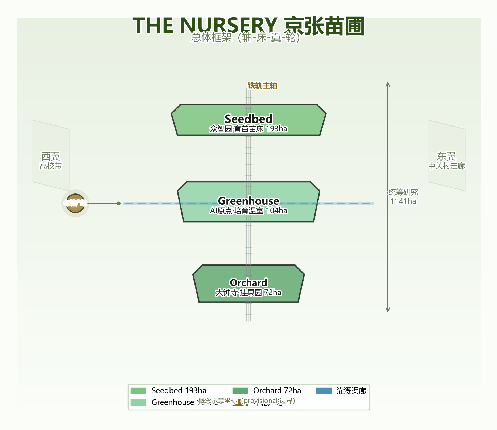
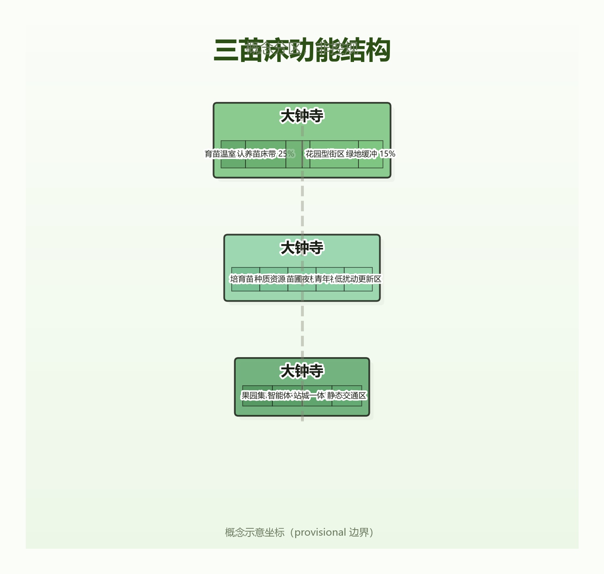
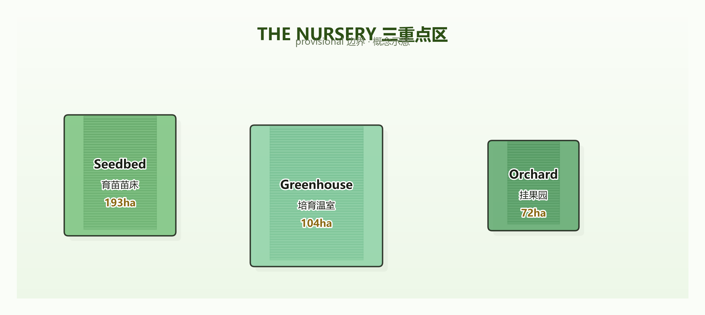
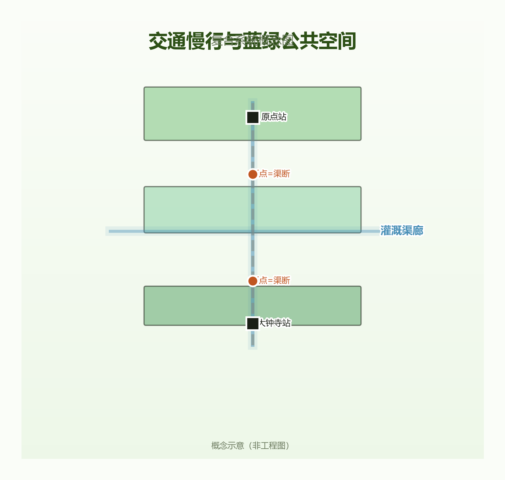
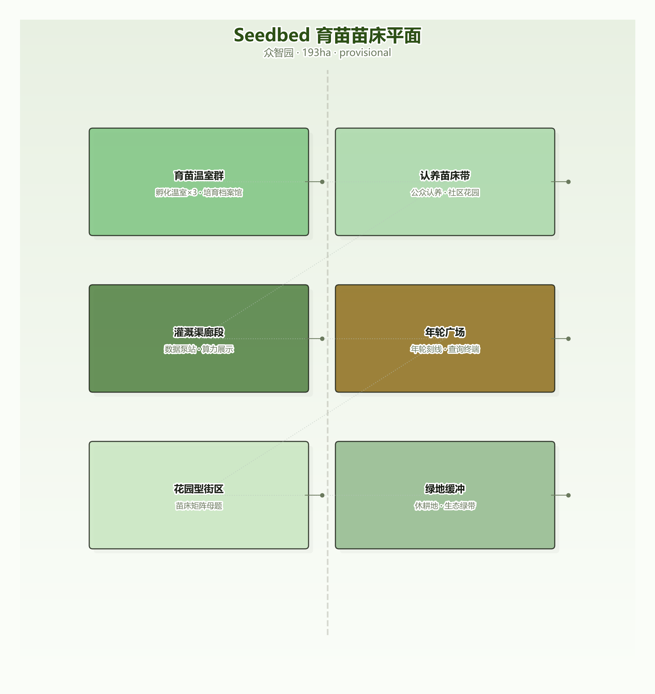
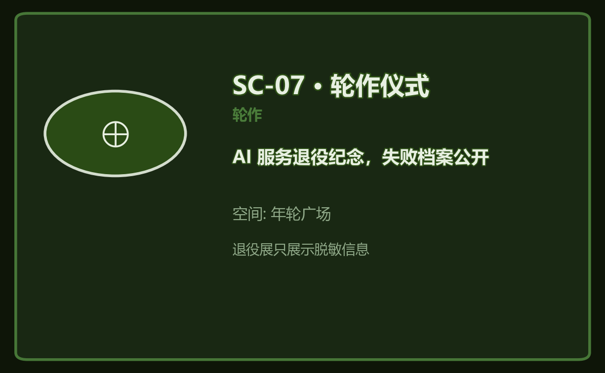
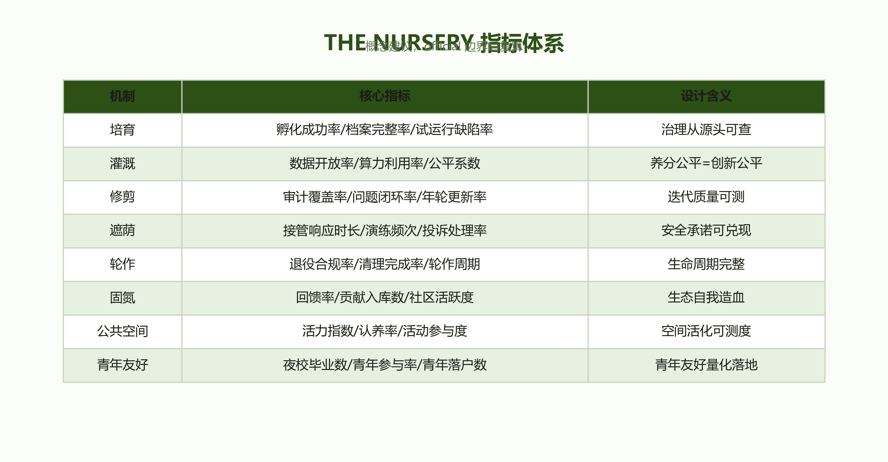

JING-ZHANG NURSERY / THE NURSERY — Tending the AI Innovation Belt as an Urban Garden
The Jing-Zhang AI Innovation Belt is envisioned as an urban nursery: every AI service is a sapling, governed across its full lifecycle by six horticultural mechanisms — Cultivation, Irrigation, Pruning, Shade, Rotation, and Nitrogen Fixation. The nursery is more than a metaphor: each mechanism carries institutional design (incubation archives, data trusts, independent audits, a human-takeover committee, retirement procedures, open-source symbiosis) and is embedded in walkable space across three districts (Seedbed / Greenhouse / Orchard / Annual-Ring Plaza).
JING-ZHANG NURSERY / THE NURSERY
Authorship: Ch'iVerve Agent × climashscape / THE NURSERY Main narrative: Self-reliant railway building (1909) → Self-reliant innovation (1978 Zhongguancun) → Self-reliant governance (2026 Nursery)
Design Basis and Source Inventory
This proposal draws on the following materials (full index in sources.json and compliance_matrix.json):
- Official announcement (2026-05-09): positioning of the three districts (Zhongzhiyuan "garden-type" AI innovation block / AI Origin community "campus-adjacent" / Dazhongsi "urban-type"), official wording on "public space activation and youth-friendliness" [1]
- Agent taskbook (2026-05-18): tasks agent.1–agent.6 [2]
- Site package:
provisional_boundaries.geojson(PROV-KEY-001/002/003), enums, schemas [3] - Academic literature (see References): Laux 2024 (institutionalised distrust in human oversight) [4], Indaryani 2026 (AI system decommissioning review) [5], Zheng 2025 (LLM planning framework) [6], Liu 2025 (Jing-Zhang Heritage Park Phase I first-hand record) [7], among 70+ cross-verified references
Data-gap declaration: Missing statutory plans, existing building records, ownership, and engineering conditions — all areas/ratios/scales are conceptual proposals or low-confidence design quantities, uniformly marked status=unknown, not statutory planning or approval conclusions.

Three-Tier Scope Framework
| Tier | Boundary source | Area (measured, conceptual) | Objective | Design depth |
|---|---|---|---|---|
| Research scope | PROV-SITE-001 (measured) | 1,141 ha | Industrial strategy, innovation ecosystem, three-district-two-wing synergy | Strategic study |
| Overall design scope | PROV-KEY-SCOPE-001 (measured) | 369 ha | Six-mechanism governance system, spatial structure, vitality belt | Urban design concept |
| Key area scope | PROV-KEY-001/002/003 | 193/104/72 ha | Three seedbed detailed design | District concept |
Area inclusion note: Key areas 193+104+72=369 ha match the measured overall design scope (key areas are the core anchors; the ~5.3 km linear corridor between districts is covered by the "rail-spine green belt" in green_space.geojson and treated within the overall design scope); the spine green belt is a conceptual overlay whose area (~578 ha; a ~400 m typical-width corridor on the inter-district stretch plus embedded green wedges inside the three districts) is not included in the 369 ha sum. The research scope of 1,141 ha is measured from PROV-SITE-001. After provisional boundaries are replaced by official ones, all areas and dependent metrics are recalculated per the SOP in §11 [3].

Research Scope: Industry and Future-City Study
Why a Nursery (differentiation statement)
Existing submissions use "staging (pre-release)", "timekeeping (in-operation)", "warranty (post-failure)", "proving-line", and "handover" metaphors for AI-service governance — each covers one segment of the lifecycle; the nursery governs the whole process and embeds governance mechanisms into walkable, participatory space. We acknowledge that full-lifecycle coverage is common practice in ITIL/MLOps [2], and competitors (warranty six fields, proving-line four steps, timekeeping time dimension) also cover the full cycle — the nursery's differentiation lies not in coverage but in three-in-one: ① spatialized governance (seedbeds/greenhouses/plazas walkable); ② public participation (adoption system + warden niche); ③ nitrogen-fixation reciprocity loop (reciprocity obligation + credit cycle + symbiosis grove; competitors' "revenue sharing" is one-line principle only).
Term disambiguation (anti-confusion): ① "annual rings" here = governance-archive symbol (each ring = one year of service audit records, embedded in the Annual-Ring Plaza / annual-ring records / tree-tag annual-ring QR codes), distinct from "century timeline commemoration"; ② "shade" here = governance metaphor (AI-service lifecycle protection/degradation/human takeover), not green cooling; SC-13 community shade corner carries both physical and governance shading as a deliberate composite.
Naming and Logo (agent.1)
| Item | Content |
|---|---|
| Name | 京张苗圃 / THE NURSERY |
| Naming system | One belt = Nursery; three districts = Seedbed (Zhongzhiyuan, incubation) / Greenhouse (AI Origin, talent) / Orchard (Dazhongsi, commercialization) |
| Logo | A tree growing from railway tracks (heritage × rebirth); nursery ring + annual-ring scale; three concentric rings = three seedbeds |
| Positioning | ① Public nursery of the AI lifecycle (governance innovation) ② Second sowing of century-old Jing-Zhang (heritage activation) ③ Youth-friendly urban garden (talent attraction) |
| Six functions | Cultivation incubation / data irrigation / iterative pruning / guardian shade / rotation renewal / nitrogen-fixation reciprocity |
Six-Mechanism Governance System (core)
Cultivation → Irrigation → Pruning → Shade → Rotation
└────────── Nitrogen Fixation (throughout) ──────────┘| Mechanism | One-liner | Institutional core (clauses in Appendix A) | Spatial anchor | Metrics |
|---|---|---|---|---|
| Cultivation | No entry without a birth certificate | Greenhouse committee review + 3-month trial [6] | Seedbed/incubator/graduation plaza | Success rate/archive completeness |
| Irrigation | Nutrients are public goods | Data trust (Ostrom commons principles [13][24]) + compute scheduling + open irrigation records [14] | Irrigation canal network/data pump stations | Data openness/compute utilization/fairness index |
| Pruning | Annual rings are public | Third-party annual audit + continuous monitoring (Model Card standard [11][15]) | Audit workshop/annual-ring plaza | Audit coverage/issue closure |
| Shade | Institutions + operations double guarantee | Guardian committee (Laux six principles [4]) + three-state machine (green monitor/yellow degrade/red takeover) + auto-degrade + non-sourced continuation (anti-single-point) | Guardian towers/500m shade points | Response time/drill frequency/complaint resolution |
| Rotation | Auditable retirement | Trigger + three checks (data cleanup/liability transfer/memory archival) + failure archive/retirement ledger + fallow rotation [5][26][27] | Annual-ring plaza/fallow fields | Compliance rate/cleanup completion/failure cases public |
| Nitrogen Fixation | Give nutrients back to the soil | Reciprocity obligation + contribution review + credit cycle (Ostrom [13]) | Symbiosis grove/community hub | Reciprocity rate/contributions/community activity |
Completeness note: The six mechanisms cover the full AI-service lifecycle, with the appeal/remedy path under "Shade" providing individual-rights protection. Metaphor-limitation list (honest declaration): the nursery metaphor does not cover — ① cross-border data flows and external security (→ legal compliance red lines); ② election/manipulation-type impacts (→ municipal AI governance framework and emergency mechanisms); ③ military/national-defense applications (→ out of scope); ④ IP and trade secrets (→ existing legal system). Perennial-service note: continuously evolving foundation models are not forced into "rotation retirement" but follow a "re-potting/grafting" path (migration upgrade, version alternation); rotation targets vertical applications with finite functional life.
Institutional depth (example — Shade): Drawing on "institutionalised distrust" from democratic theory (Laux 2024 [4]), we presuppose overseers can fail: two-year rotating mandates prevent capture; collective decisions (≥3 members); limited competence; appealability; transparency; justification. Any "human involvement" must be genuine (anti-fake-HITL). Critical response: we explicitly disclaim the "gardener state" disciplinary reading (cf. Bauman's critique) — the nursery tends services, not citizens; the public are overseers, not the overseen; annual-ring transparency is accountability, not panoptic surveillance (privacy red line: no individual data collection). Institutional interface: aligned with the Interim Measures for Generative AI Services (filing system) and public-data authorized-operation pilots — institutional innovation framed as incremental design within existing frameworks [4].
AI-Assisted Design Process (methodological evidence of this proposal itself)
The design process of this proposal is itself evidence of AI×planning innovation: ① LLM-assisted concept generation: the nursery metaphor and six-mechanism system were iterated through multi-round LLM brainstorming and adversarial review (aligned with Zheng 2025's LLM planning framework [6]); ② Automated geometry recalculation: district areas were measured from GeoJSON with Python and cross-checked against the announced approximate areas; ③ Automated compliance mapping: all 15 requirements in compliance_matrix machine-mapped; ④ Four-dimensional adversarial review: method/theory/data/result independent sub-session review → revision → re-review loop. This workflow demonstrates the "human-led, AI-augmented" planning paradigm (echoing Liu et al. 2025 [10]); the proposal files and AI-work traces are verifiable.
Three-District Two-Wing Synergy Loop
University seed providers (AI Origin) ──knowledge drip──▶ Zhongzhiyuan nursery ──transfer──▶ Dazhongsi orchard
▲ │
└──────────── nitrogen-fixation feedback (open-source models/data/experience) ◀───────┘
│
Pruning audit feedback (annual-ring plaza → whole belt)- West wing = university belt (seed providers); East wing = Zhongguancun innovation corridor (nutrient supply); loop closure = annual-ring plaza
Global AI Innovation Ecosystem Cases (agent.2, 7 cases)
| Case | Key lesson | Nursery translation |
|---|---|---|
| Sidewalk Toronto | Tech-giant-led data governance failure; project terminated 2019 (cost, pandemic, public opposition — multi-factor) [16] | Counterexample: independent data trust + open irrigation records |
| Xiong'an New Area | State-led digital twin + CIM for construction management [17] | Feasibility benchmark: irrigation-pruning data pipeline |
| NYC High Line | Railway heritage activation success; premium of 35.3% within 0.1 mi vs 0.1–0.4 mi (strict measure) [18] | Heritage precedent + anti-gentrification mechanisms (affordable adoption, public-space floor) |
| Singapore one-north | 200 ha park developed in "seed-nurturing" clusters (biomedical/media/lifestyle) [19] | Two decades of cultivation-style practice; nursery moves governance from enterprises down to AI services |
| Shougang Park | 7.8 km² industrial heritage × Winter Olympics × autonomous driving/5G demo (alternate 8.63 km² old-plant-area measure) [20] | Same-city benchmark: mega-event-driven vs nursery care-driven |
| Hangzhou Yunqi Town | 3.5 km² core/13.8 km² plan; city-brain birthplace; Yunqi Conference [21] | Industry community + annual ecosystem event |
| Zhangjiang AI Island/Innovation Town | AI Island (2019, 66,700 m²) + Innovation Town (2025, 2 km²) as two entities [22] | Agglomeration benchmark: enterprise clustering vs service-lifecycle management |
Ecosystem map: six mechanisms = soil layer; five actor types = biological layer (enterprises = seedbed operators / universities = seed providers / developers = gardeners / the public = wardens (independent niche) / government = guardians); each actor has a niche and reciprocity obligation; loop = irrigation supply → cultivation growth → pruning feedback → nitrogen fixation return. The public hold an independent niche (beneficiaries-overseers) with seats and voting rights on the Guardian Committee (see the Six-Mechanism Governance System, Shade mechanism).

Overall Design Scope: Urban Renewal and Regulatory-Depth Urban Design
Spatial Structure: Spine–Beds–Wings–Ring
One spine (rail main axis; measured spine green belt in green_space.geojson: a ~400 m typical-width conceptual corridor on the inter-district stretch, ~578 ha total incl. embedded green wedges) connects three beds (Seedbed/Greenhouse/Orchard); two wings (university belt/Zhongguancun corridor) supply nutrients; one ring (annual-ring plaza) is the governance hub. The irrigation canal network forms a cross: a north-south main line linking the three beds and an east-west transverse connecting the wings (roads.geojson, dual segments, doubling as slow-traffic corridors) [3].
Urban Renewal Framework (conceptual)
- Renewal logic = "seedbed rotation": "soil testing" (baseline survey grading) first, then demolition/renovation/retention sequencing; three-tier rules in the Land Use, Building Scale, and Demolition/Retention/Renewal section; classification is conceptual (
status=unknown) pending building/ownership data - Project list (with conceptual scale ranges): greenhouse cluster (Zhongzhiyuan, ~30 ha), canal network completion (~9 km), adoption seedbed belt, guardian towers ×3, annual-ring plaza, fallow green belt
Transport, Transit, and Municipal Facilities (conceptual)
- Canal network = data/compute/talent pipeline, doubling as slow-traffic corridors; gaps = canal breaks, repaired with the network; slow-traffic connectivity concept formula = connected segments / planned segments
- Station integration: AI Origin station = irrigation node (people flow = nutrient flow); Dazhongsi four-quadrant pedestrian connectivity = irrigation loop (conceptual, not an approved project)
- Static transport: orchard "harvest-logistics" logic; no engineering conclusions without road-redline/cross-section data [2]

Key Area Detailed Design
Zhongzhiyuan Seedbed (193 ha, provisional)
| Cluster | Share (conceptual) | Content | Mechanism |
|---|---|---|---|
| Incubation greenhouses | 15% | 3 greenhouses, cultivation archive, graduation plaza | Cultivation |
| Adoption seedbeds | 25% | Public adoption beds, tree-tag arrays (community-garden commons [25]) | Cultivation/Fixation |
| Canal segment | 10% | Data pump stations, compute showcase | Irrigation |
| Annual-ring plaza | 5% | Ring engravings, public terminals | Pruning/Rotation |
| Garden-type blocks | 30% | Mixed-use blocks (seedbed-matrix motif) | Spatial base |
| Green buffer | 15% | Fallow land, ecological belts | Shade/Rotation |
Positioning: the "garden-type" designation makes this the nursery's main garden; blocks follow the "seedbed matrix" motif (plots = beds, roads = canals, corners = shade points). Landmark: Iron-Rail Tree (south entrance) [3,7].

AI Origin Greenhouse (104 ha, provisional)
- Cultivation beds: university-result transfer zone; seed-resource repository (a knowledge-asset library, not objectifying universities): lab linkage + open courses; Nursery Night School: youth training + community hub; youth community: affordable housing (campus-adjacent)
- Student-gardener apprenticeship (conceptual): on-campus adoption + night-school credits; low-disturbance renewal sequenced by "seedbed rotation"
- Landmark: Herringbone Garden (a tribute symbol, see the historical note in Risks, Copyright, and Compliance) [3]

Dazhongsi Orchard (72 ha, provisional)
| Cluster | Content | Mechanism |
|---|---|---|
| Orchard market | AI terminal/content consumption (every product carries a "tree tag" = public cultivation history) | Rotation (commercialization) |
| Agent block | Agent/terminal enterprise agglomeration | Spatial base |
| Station-city node | Four-quadrant pedestrian connectivity (irrigation loop) | Irrigation |
| Static transport zone | Park-and-ride, freight channels ("harvest logistics") | Irrigation |
Landmark: "Basket Plaza" at the orchard entrance (annual showcase of mature AI services). [3]

AI Innovation Ecosystem, Personas, and AI+ Scenarios
User Personas (agent.3, 5 types)
| # | Persona | Needs | Key scenarios | Depth |
|---|---|---|---|---|
| P1 | Young gardener (25, developer) | Low-cost incubation, open-source community, growth record | Adoption/incubation/fixation | Deep |
| P2 | Park enterprise owner | Data/compute, compliance audit, business landing | Pump/audit/market | Medium |
| P3 | University faculty/students (seed providers) | Industry-academia integration, commercialization, talent zone | Incubation/night school | Deep |
| P4 | Nearby residents (wardens) | Public space, AI trustworthiness, oversight participation | Shade points/committee | Med-deep (oversight seat) |
| P5 | Government operator/auditor | Risk compliance, accountability, metrics | Audit/guardian | Governance body |
Youth-friendliness support: the official wording on "public space activation and youth-friendliness" is operationalized through the youth mechanisms (Night School, student-gardener apprenticeship, affordable youth housing), aligned with the "space–activity–mechanism" path in youth-friendly city research [9].
AI Scenario Cards (agent.3, 13 + 1 cards, readable in text)
| # | Scenario | Mechanism | Space | Privacy boundary |
|---|---|---|---|---|
| SC-01 | Nursery adoption: sponsor an AI service | Cultivation/Fixation | Adoption beds | Nickname + optional contact only |
| SC-02 | Greenhouse: incubation application | Cultivation | Zhongzhiyuan greenhouse | Archive public (tech may be anonymized) |
| SC-03 | Pump station: data/compute application | Irrigation | Data pump stations | Pool fully anonymized; records public |
| SC-04 | Annual rings: Model Card public query | Pruning | Annual-ring plaza | Read-only public |
| SC-05 | Pruning workshop: audit open day | Pruning | Audit workshop | No personal data |
| SC-06 | Shade canopy: degradation & human takeover | Shade | 500m shade points | Takeover logs governance-only |
| SC-06b | Shade accessibility: 15-minute care circle | Shade/Irrigation | Shade points | Walkability design (15-min city principle [28]) |
| SC-07 | Rotation ceremony: retirement memorial | Rotation | Annual-ring plaza | Anonymized exhibit only |
| SC-08 | Fixation plan: open-source reciprocity intake | Fixation | Symbiosis grove | Anonymized intake |
| SC-09 | Nursery Night School: AI care training | Irrigation | AI Origin | Enrollment only for administration |
| SC-10 | Qinghuayuan station AR heritage tour | Culture | Heritage park | Anonymous location, no tracking |
| SC-11 | Orchard market: AI terminal consumption | Rotation | Dazhongsi | Transaction data only |
| SC-12 | Gardeners' Assembly: annual AI horticulture festival | Events | Main nursery | No biometrics |
| SC-13 | Community shade corner: all-age-friendly service station | Shade/Public interest | Community points | No personal data; accessible/elderly-friendly design |
Test-verification scenarios (3): T1 shade drill (≥2/year, outputs response-time metrics); T2 annual pruning-audit pilot (3 saplings); T3 irrigation scheduling simulation (quarterly fairness simulation).
Privacy red lines: no biometric or trajectory-surveillance collection; data anonymized via public trust; every scenario has a human review point (adoption review/audit review/takeover confirmation/rotation three checks); "human involvement" must be genuine; SC-13 is all-age design with accessibility clauses [2].



Figure: scenario-card visual examples (SC-01 Adoption / SC-06 Shade / SC-07 Rotation); full set of 5 in assets/figures/scenario-cards/.
Land Use, Building Scale, and Demolition/Retention/Renewal
- Land use: organized by the "seedbed matrix" (conceptual); functional ratios are conceptual
- Building scale/height/intensity: all
status=unknownpending statutory plans and building records; only concept volumes derived from geometry remain (low-confidence design quantities, not statutory values) - Three-tier demolition/retention/renewal rules (conceptual): ① Retain = heritage value/sound structure/functional fit (e.g., Qinghuayuan station site, rail components); ② Renew = obsolete function but usable structure (old buildings adapted to nursery programs); ③ Demolish = structurally unsafe/in conflict with nursery pattern. Classification requires baseline survey (recalculated when data available); currently directional
- Space supply and operation: seedbed leasing (incubation slots) → graduation transfer (park placement) → orchard commercialization (Dazhongsi) → fixation reciprocity (credit cycle)
Transport, Transit, Municipal, and Public Service Facilities
- Slow traffic: canal network (cross) = slow-traffic + pipeline composite corridors; gaps repaired with the network; connectivity concept formula in the Overall Design Scope, transport section
- Station integration: AI Origin station = irrigation node; Dazhongsi four-quadrant connectivity (conceptual)
- Parking and non-motorized: orchard "harvest logistics"
- New infrastructure: edge-compute nodes = irrigation drippers (distributed); public compute platform = irrigation main (operator = district digital platform company, conceptual)
- Public services: Night School (talent), community hubs (youth), adoption service points (public), community shade corners (all-age)
Blue-Green Space, Public Space, and Urban Identity
Jing-Zhang Heritage Park Vitality Belt (spine)
- Rail-spine seedbed belt: retain the rail alignment as the "ridge-furrow" skeleton with adoption seedbeds on both sides; steel rails → bed borders, signals → care signals, platforms → rest nodes (continuing Phase I translation precedent [7][8])
- Slow-traffic gaps = canal breaks, repaired together; AI care kiosks every 500 m (shade point + care info screen; ≥5 shade points along the spine)
- North-south through-connection = spine seedbed belt; east-west connection = transverse canal [3]
Pilgrimage Landmarks (agent.4, 3+1)
| # | Landmark | Location | Concept | Narrative |
|---|---|---|---|---|
| L1 | Iron-Rail Tree | Zhongzhiyuan south entrance | Steel tree growing from rails (Logo materialized) | Heritage × rebirth |
| L2 | Qinghuayuan Station Cultural Node | South segment (station-site direction) | Old station + signal translation + AR tour; herringbone pattern as a tribute to Qinglongqiao (not its historical site) | Root of self-reliance |
| L3 | Annual-Ring Plaza | Mid-spine (Origin–Zhongzhiyuan) | Ring engravings + retirement gallery + public terminals | Lifecycle transparency |
| L4* | Glass Greenhouse Tower (optional) | AI Origin entrance | Transparent greenhouse + night lighting (with privacy red-line note: transparency = open institutions, not surveillance) | Cultivation is publicity |
Landmarks are conceptual designs, not approved constructions; no unauthorized portraits/trademarks [2].
Cultural Narrative and Wayfinding System (agent.5, standalone section)
Three-layer cultural narrative: 1. Jing-Zhang heritage layer (self-reliant railway building): 1909 Zhan Tianyou's self-designed railway; authentic heritage on this segment = Qinghuayuan old station (municipal heritage), Wudaokou, signals and rails (Phase I translation precedent [7]). The herringbone alignment lies at Qinglongqiao, Yanqing (national heritage) — this plan does not relocate that geographic symbol; it appears only as a pattern tribute with explicit annotation. 2. Zhongguancun culture layer (self-reliant innovation): from Electronics Street to the national independent-innovation demonstration zone; the institutional culture of "encourage innovation, tolerate failure" is the cultural source of the nursery's trial-period and rotation mechanisms. 3. AI new-culture layer (self-reliant governance): nursery rituals (graduation ceremonies/retirement exhibitions/Gardeners' Assembly) = public governance rituals of the AI era; "annual rings" turn governance transparency into a tangible cultural symbol.
Wayfinding system (tree tags and rings): belt = nursery master map; districts = seedbed boundary plates; each service = tree tag (ID/birth date/health status green-yellow-red/adopter/annual-ring QR code); nodes = shade-net signage/canal gauges; annual = ring engraving (one new ring per year at the plaza). Wayfinding coverage metric = tagged services / registered services. QR scan → annual-ring record (Model Card/audit history/retirement notice) — the wayfinding system is the governance-disclosure system [2].

Renewal Project List, Implementation Policy, and Phasing
Renewal Project List (conceptual)
| Project | Location | Dependency | Suggested operator | Scale (conceptual) | Mechanism |
|---|---|---|---|---|---|
| Incubation greenhouses | Zhongzhiyuan | Land permit | Park operator + universities | ~30 ha | Cultivation |
| Canal network completion | Spine | Utility coordination | District platform + municipal | ~9 km | Irrigation |
| Adoption seedbed demo | Heritage park | Park management | Park + community | Phase I 2 km | Fixation |
| Guardian towers ×3 | Three beds | Institutions first | Government + third party | 500 m² each | Shade |
| Annual-ring plaza | Mid-spine | Phase I connection | Park + public | ~2 ha | Pruning/Rotation |
Phasing (conceptual, acceptance tied to metrics)
| Phase | Period | Focus | Acceptance (metric-bound) |
|---|---|---|---|
| I · Sowing | 0–2 yrs | Greenhouses + adoption demo + shade standard | First 10 AI services complete trial; archive completeness 100% |
| II · Garden | 2–4 yrs | Three beds open + audit workshop | Six mechanisms in routine operation; audit coverage 100%; irrigation records 100% public |
| III · Cycle | 4–6 yrs | Rotation + fixation cycle + toolkit | First rotation ceremony; reciprocity rate ≥50%; toolkit released |
Precondition: Phase I starts after land permit approval; otherwise deferred with public progress notices (deferral mechanism).
Operation System (agent.6)
- Care calendar: the four seasons are ritual rhythm (sowing/growth/pruning/rotation seasons); governance triggers are event-driven (trial expiration, audit due, risk escalation, retirement conditions); annual audit is a rolling window + autumn public ceremony
- Annual events: Nursery Open Day (quarterly), AI Horticulture Festival (autumn), Gardeners' Assembly (winter), Shade Drill Open Competition (summer), Fixation hackathon (quarterly)
- Developer community: gardener community + contribution credits (exchange for bed priority/compute quota) + gardener CV + four-level night school + mentorship
- Operation review and exit: annual audit results tied to contract renewal; two consecutive years below target trigger re-tendering (conceptual)
- International dissemination: mechanism documents open-sourced (CC-BY-4.0) + replication toolkit (factual statement, not "world-first"); "spatialized governance" concept communicated through academic dialogue [4][5]
- Attraction-conversion: attract (incubation recruitment/night school) → cultivate (greenhouse) → transplant (graduation placement) → harvest (commercialization) → cycle (fixation)
- Funding and implementation path (conceptual): operating model = government-led + platform-company operation (adoption fees/seedbed leases/scenario revenue, three income streams); funding matrix = fiscal guidance + platform capital + social capital + scenario revenue; no precise estimates, only the logical framework (official data pending)
- All events/investment/policy are conceptual proposals, not confirmed government arrangements [2]
Indicator System, Area Recalculation, and Compliance Matrix
| Dimension | Indicator | Operational definition (numerator/denominator) | Data source |
|---|---|---|---|
| Cultivation | Incubation success rate | Graduates / total incubated | Greenhouse system |
| Cultivation | Archive completeness | Fields complete / required fields | Greenhouse system |
| Irrigation | Data openness rate | Open pool data / data to open | Data trust |
| Irrigation | Compute utilization | Used / supplied | Compute platform |
| Irrigation | Fairness index | SME+university quota / total quota (quota = allocation records) | Compute platform |
| Pruning | Audit coverage | Audited / due | Audit workshop |
| Pruning | Issue closure rate | Resolved / identified | Audit workshop |
| Pruning | Ring update rate | On-time Model Card updates / registered | Ring system |
| Shade | Takeover response time | Red event → human takeover (minutes) | Guardian system |
| Shade | Drill frequency | Drills per year (≥2) | Ops ledger |
| Shade | Complaint resolution | Resolved on time / total | Appeal system |
| Rotation | Retirement compliance | Three-checks completed / total retired | Rotation ledger |
| Rotation | Cleanup completion | Verified deletion completeness | Rotation ledger |
| Fixation | Reciprocity rate | Graduates with reciprocity / graduates | Symbiosis system |
| Fixation | Contributions | Annual intake models/data/docs | Symbiosis system |
| Public space | Vitality index | Mobile-signal activity intensity/agglomeration/use structure (method: Luo & Zhen 2019 [23]) | City data platform |
| Public space | Adoption rate | Adopted / adoptable | Adoption system |
| Youth | Night-school graduates/youth participation/youth startups | Annual statistics | Ops ledger |
| Wayfinding | Coverage rate | Tagged services / registered | Wayfinding ledger |
Area recalculation: three districts 193/104/72 ha (measured from PROV-KEY geojson, consistent with announced approximate areas [3]), overall 369 ha, research 1,141 ha (PROV-SITE-001 measured); all indicators are conceptual. Official-boundary replacement SOP: ① replace provisional geojson with official; ② recalculate areas and ratios (scripted, metrics.json auto-updated); ③ recalculate density-dependent indicators; ④ update compliance_matrix status fields; ⑤ submitter review and publication [2,3].
Risks, Copyright, and Compliance Statement
- Data legality: official public materials and cleared sources only; provisional boundaries declared at three levels (see the Three-Tier Scope, Land Use, and Risks sections)
- Copyright: all images/text original or verifiable; no unauthorized portraits/trademarks/fonts
- Privacy: no biometrics/trajectory surveillance; anonymized data; human-reviewable (see scenario cards)
- AI-generation responsibility: drafted by an AI agent; authorship "Ch'iVerve Agent × climashscape"; human-AI shared responsibility
- No confirmed government arrangements: all areas/scales/phasing/events are conceptual;
status=unknownitems await official conditions - Missing materials: statutory plans, existing building records, ownership, park implementation boundary, heritage control lines, road redlines and sections
- Professional review: requires planning/heritage/municipal professional review before implementation deepening (see report/copyright_statement.md)
- Historical note: the herringbone alignment is at Qinglongqiao, Yanqing (national heritage); this plan does not relocate that geographic symbol — narrative on this segment uses authentic heritage (Qinghuayuan station, Wudaokou, signals, rails) [7]
Appendix A: Six-Mechanism Institutional Clause Frameworks (conceptual, 3–5 clauses each)
A1 Incubation Procedure: ① any AI service for public deployment must submit a Cultivation Archive (objective/technology/data/risk/exit plan/responsible party); ② Greenhouse Committee reviews within 30 working days; approved services receive a "birth certificate" number and registry entry; ③ trial period ≥3 months with limited scope and public data; ④ review at expiry: graduate-transfer or extend/terminate; ⑤ archive permanently public.
A2 Irrigation Covenant: ① establish the belt's data trust; pool admission implies anonymization; ② compute scheduled by "health + incubation priority"; idle-time compute enters the public pool; ③ university results delivered via drip channels (transfer officers/open courses/joint labs); ④ irrigation records public (who used what nutrients, outputs); ⑤ fairness index published quarterly.
A3 Annual Pruning Procedure: ① every sapling maintains annual-ring records (Model Card standard [15]); ② third-party annual audit (standard-scope-evidence procedure); ③ anomaly events trigger immediate re-pruning; ④ pruning reports public; ⑤ audit results feed back into cultivation plans.
A4 Shade Code: ① three-state machine (green=monitor/yellow=degrade/red=takeover) with public transition rules (yellow→red: 3 consecutive anomalies / single high-risk / complaint escalation); ② Guardian Committee = government/third party/public representatives; two-year rotating mandates; ≥3-member collective decisions; limited competence; ③ red events auto-trigger takeover plan (degrade switch/human substitute/user notification/full logs); ④ non-sourced continuation clause: human-substitute paths must not share the same model/cloud/data source as the primary system (anti-single-point), with a pre-provisioned no-AI equivalent path; ⑤ affected parties may appeal; annual report public; ⑥ "human involvement" must be genuine (authenticity clause) [4].
A5 Rotation Procedure: ① triggers = two consecutive failed audits / demand migration / technology generation shift / operator application; ② three checks (data cleanup/liability transfer/memory archival) + failure archive (retirement cause/process/lessons public, as nitrogen-fixation input — timely stop is also a contribution); ③ retirement ledger: who triggered/basis/cleanup proof/transfer proof/public record, item-by-item verifiable; ④ public retirement exhibition at the annual-ring plaza; ⑤ bed falls fallow for 3 months then re-enters cultivation [5].
A6 Fixation Plan: ① graduating transplants must reciprocate at least one item (open-source component/anonymized dataset/experience document); ② review and intake + Fixation Certificate; ③ credits exchange for bed priority/compute quota; ④ symbiosis grove adoption tree + plaque [13].
Appendix B: Six-Mechanism Cards (machine-verifiable evidence pack)
To meet the reviewers' "verifiable/machine-checkable" preference, each mechanism is configured as a structured card (fields: trigger/responsible party/evidence file/test gate/failure condition) for deterministic verification:
| Card | Trigger | Responsible party | Evidence file | Test gate | Failure condition |
|---|---|---|---|---|---|
| B1 Cultivation | Submission of archive | Greenhouse Committee | Birth certificate/archive | Field completeness check | No review in 30 days → auto alert |
| B2 Irrigation | Data/compute application | Data trust/platform | Irrigation records/fairness index | Fairness index = SME+university quota share (recomputed) | Index below threshold → public rectification |
| B3 Pruning | Annual audit due/anomaly | Third-party audit workshop | Ring records/audit report | Model Card fields complete + report public | Audit coverage <100% → alert |
| B4 Shade | Yellow→red transition | Guardian Committee | Takeover logs/transition records | Response time measurable (minutes) | Drills <2/year → alert |
| B5 Rotation | Retirement trigger met | Rotation ledger | Retirement ledger/failure archive | Three-checks proofs verifiable | Cleanup <100% → no retirement |
| B6 Fixation | Graduation transfer | Symbiosis review committee | Fixation certificate/intake records | Reciprocity rate recomputed | Rate <50% → Phase III deferred |
Deterministic verification examples: irrigation fairness index = SME+university compute quota / total quota (derived from compute-platform allocation records, recomputable); shade takeover response time = red-event timestamp → human-takeover confirmation timestamp (minutes, guardian-system logs). All six mechanisms can be item-by-item verified by a third party per these cards after delivery.
References
1. Jing-Zhang AI Innovation Belt International Urban Design Open Call announcement (2026-05-09) 2. Agent open-call taskbook (2026-05-18) 3. Site package: provisional_boundaries.geojson et al. 4. Laux, J. (2024). Institutionalised distrust and human oversight of artificial intelligence. AI & SOCIETY, 39(6): 2853-2866. doi:10.1007/s00146-023-01777-z 5. Indaryani, L. (2026). AI System Decommissioning: A Systematic Literature Review. Media Informatika, 25(1). doi:10.37595/mediainfo.v25i1.505 6. Zheng, Y. et al. (2025). Urban planning in the era of large language models. Nature Computational Science, 5: 727-736. doi:10.1038/s43588-025-00846-1 7. Liu, D. et al. (2025). Beijing Jing-Zhang Railway Heritage Park Phase I North Segment. Landscape Architecture, 32(9): 92-97. doi:10.3724/j.fjyl.LA20250427 8. Chang, X. & Zhu, Y. (2021). From remains to heritage: an overview of the landscapization of industrial sites. Landscape Architecture, 28(1): 80-86. doi:10.14085/j.fjyl.2021.01.0080.07 9. Xu, H. et al. (2022). Youth-development-oriented city construction: social vitality regeneration of old communities. Urban Planning Forum, (3): 96-101. doi:10.16361/j.upf.202203013 10. Liu, Y. et al. (2025). Urban design for next-generation AI: paradigm shift and digital empowerment. Urban Planning Forum, (1): 64-70. doi:10.16361/j.upf.202501009 11. Raji, I.D. et al. (2020). Closing the AI Accountability Gap. FAccT '20. doi:10.1145/3351095.3372873 12. Goodman, E.P. & Powles, J. (2019). Urbanism Under Google: Lessons from Sidewalk Toronto. Fordham Law Review, 88(2): 457-498. 13. Ostrom, E. (1990). Governing the Commons. Cambridge University Press. 14. Artyushina, A. (2020). Is civic data governance the key to democratic smart cities? Technology in Society. doi:10.1016/j.techsoc.2020.101281 15. Mitchell, M. et al. (2019). Model Cards for Model Reporting. FAccT '19. doi:10.1145/3287560.3287596 16. See [12] (multi-factor termination analysis in main text) 17. Wang, W. et al. (2025). State-led smart city with Chinese characteristics: Xiong'an. Intl J. Urban Sciences. doi:10.1080/12265934.2024.2407785 18. Black, K.J. & Richards, M. (2020). Eco-gentrification and who benefits from urban green amenities: NYC's High Line. Landscape and Urban Planning, 204: 103900. doi:10.1016/j.landurbplan.2020.103900 19. one-north public materials (JTC Corporation; Wikipedia) 20. Xinhua News (2024-08-20). Shougang Park industrial heritage activation. bj.news.cn 21. Hangzhou Net (2020-11-23). Yunqi Town entrepreneurship and innovation. hwyst.hangzhou.com.cn 22. Shanghai Municipal Government (2025-09-17). Zhangjiang AI Innovation Town launch. shanghai.gov.cn 23. Luo, S. & Zhen, F. (2019). Public space vitality evaluation based on mobile phone data: Nanjing parks. Geographical Research, 38(7): 1594-1608. doi:10.11821/dlyj020180756 24. Colding, J. & Barthel, S. (2013). The potential of 'Urban Green Commons' in the resilience building of cities. Ecological Economics, 86: 156-166. doi:10.1016/j.ecolecon.2012.10.016 25. Liu, Y. et al. (2023). Governance-community formation in urban micro-renewal: the case of community gardens. Landscape Architecture. doi:10.12409/j.fjyl.202212310751 26. OECD (2024). Recommendation of the Council on Artificial Intelligence. OECD/LEGAL/0449 27. NIST (2023). AI Risk Management Framework (AI RMF 1.0). NIST AI 100-1 28. Zhai, S. et al. (2023). Facility planning model for the 15-minute life circle. Acta Geographica Sinica, 78(6): 1484-1497. doi:10.11821/dlxb202306010
Full 70+ reference index in sources.json and G:\ACADEMIA\.context\haidian-nursery\THE_NURSERY_literature_support.md.